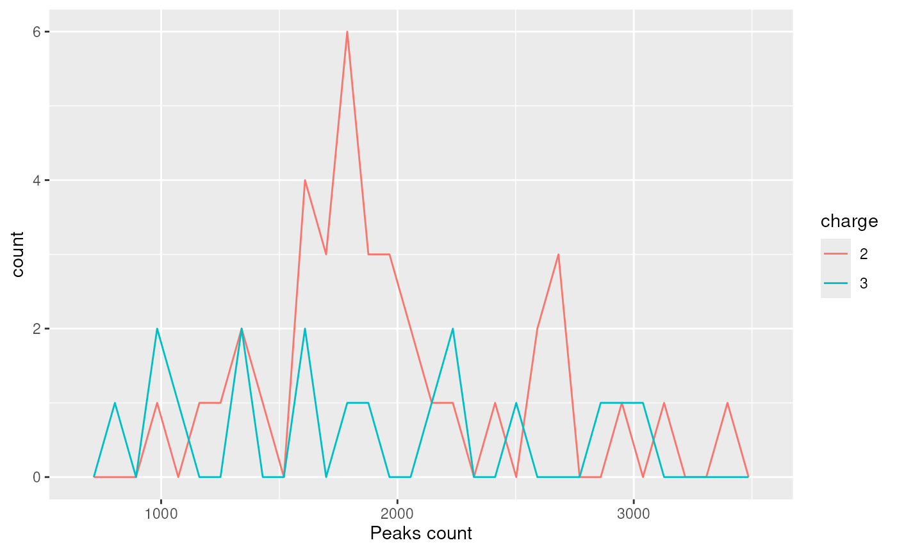
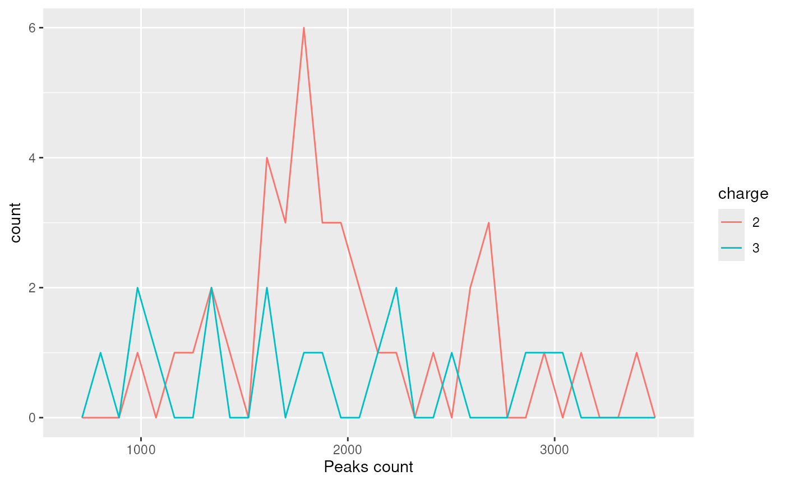

The 'plotDensity' method for 'MSnExp' quality assessment
plotDensity-methods.RdThese methods plot the distribution of several parameters of interest
for the different precursor charges for "MSnExp"
experiment.
The methods make use the ggplot2 system. An object of class
'ggplot' is returned invisibly.
Arguments
- object
An object of class
"MSnExp"or and 'data.frame'. In the latter case, the data frame must have numerical columns named 'charge' and one of 'precursor.mz', 'peaks.count' or 'ionCount', depending on thezparameter. Such a data frame is typically generated using theheadermethod on"MSnExp"object.- z
A character indicating which parameter's densitiy to plot. One of, possibly abreviated, "ionCount" (total ion count), "peaks.count" (peaks count) or "precursor.mz" (precursor MZ).
- log
Logical, whether to log transform the data (default is 'FALSE').
- plot
A logical indicating whether the plot should be printed (default is 'TRUE').
Methods
signature(object = "MSnExp", ...)Plots a 'MSnExp' summary.
signature(object = "data.frame", ...)Plots a summary of the 'MSnExp' experiment described by the data frame.
See also
The plot2d and plotDensity methods for
other QC plots.
Examples
itraqdata
#> MSn experiment data ("MSnExp")
#> Object size in memory: 1.9 Mb
#> - - - Spectra data - - -
#> MS level(s): 2
#> Number of spectra: 55
#> MSn retention times: 19:09 - 50:18 minutes
#> - - - Processing information - - -
#> Data loaded: Wed May 11 18:54:39 2011
#> Updated from version 0.3.0 to 0.3.1 [Fri Jul 8 20:23:25 2016]
#> MSnbase version: 1.1.22
#> - - - Meta data - - -
#> phenoData
#> rowNames: 1
#> varLabels: sampleNames sampleNumbers
#> varMetadata: labelDescription
#> Loaded from:
#> dummyiTRAQ.mzXML
#> protocolData: none
#> featureData
#> featureNames: X1 X10 ... X9 (55 total)
#> fvarLabels: spectrum ProteinAccession ProteinDescription
#> PeptideSequence
#> fvarMetadata: labelDescription
#> experimentData: use 'experimentData(object)'
plotDensity(itraqdata,z="ionCount")
#> `stat_bin()` using `bins = 30`. Pick better value with `binwidth`.
 plotDensity(itraqdata,z="peaks.count")
#> `stat_bin()` using `bins = 30`. Pick better value with `binwidth`.

plotDensity(itraqdata,z="precursor.mz")
#> `stat_bin()` using `bins = 30`. Pick better value with `binwidth`.
plotDensity(itraqdata,z="peaks.count")
#> `stat_bin()` using `bins = 30`. Pick better value with `binwidth`.

plotDensity(itraqdata,z="precursor.mz")
#> `stat_bin()` using `bins = 30`. Pick better value with `binwidth`.